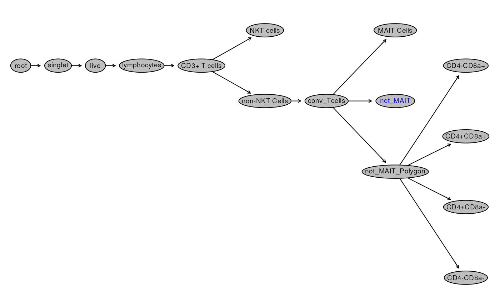
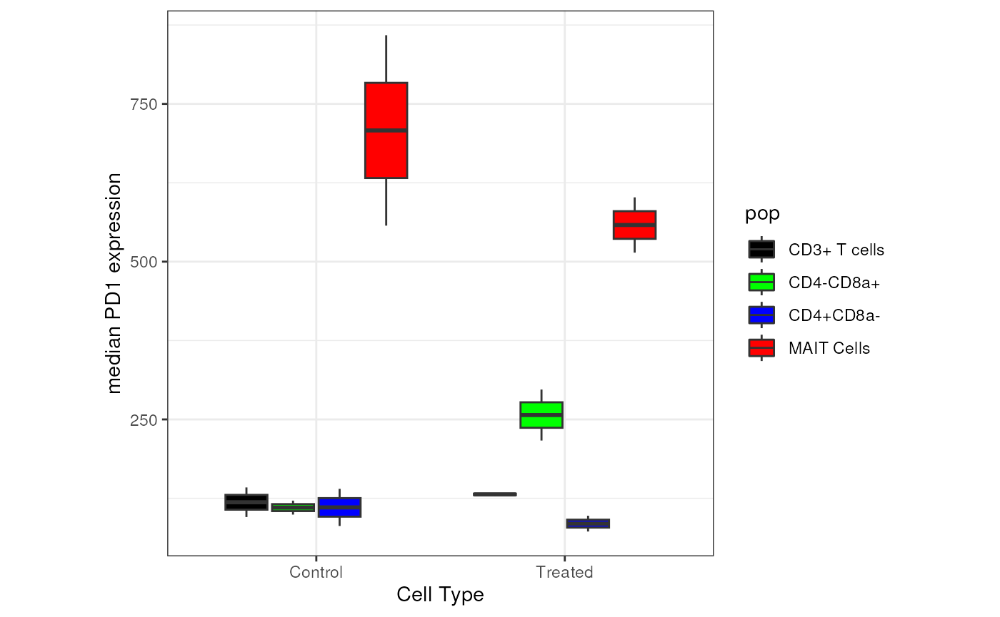
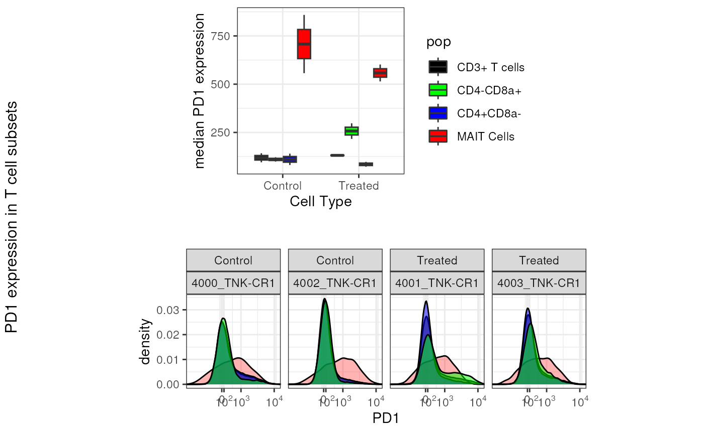

The final step in the analysis of flow cytometry data is Reporting. Below, we show how we can quickly extract counts, frequencies, and expression values for their population(s) of interest.
library(flowCore)
library(flowWorkspace)
library(ggcyto)
library(CytoverseBioc2023)
theme_set(
theme_bw()
)
cache_workshop_data()We can easily extract Counts and Frequencies of the gated cell
population from the GatingSet.
# get count for all
counts <- gs_pop_get_count_fast(gs, # indicate which GatingSet to use
statistic = "count", # indicate what statistic is requested
format = "wide") # indicate if data should be in wide (samples are columns) or long (each node for each sample gets a row) format
knitr::kable(head(counts,20), caption = "Event counts")| 4000_TNK-CR1 | 4001_TNK-CR1 | 4002_TNK-CR1 | 4003_TNK-CR1 | |
|---|---|---|---|---|
| /singlet | 90262 | 82068 | 334703 | 128359 |
| /singlet/live | 85748 | 77964 | 317967 | 121941 |
| /singlet/live/lymphocytes | 79681 | 72193 | 290804 | 113559 |
| /singlet/live/lymphocytes/CD3+ T cells | 67516 | 57817 | 241097 | 80699 |
| /singlet/live/lymphocytes/CD3+ T cells/NKT cells | 5 | 112 | 477 | 75 |
| /singlet/live/lymphocytes/CD3+ T cells/non-NKT Cells | 64811 | 55207 | 237340 | 80040 |
| /singlet/live/lymphocytes/CD3+ T cells/non-NKT Cells/conv_Tcells | 62011 | 51980 | 228588 | 78775 |
| /singlet/live/lymphocytes/CD3+ T cells/non-NKT Cells/conv_Tcells/MAIT Cells | 460 | 733 | 1649 | 643 |
| /singlet/live/lymphocytes/CD3+ T cells/non-NKT Cells/conv_Tcells/not_MAIT | 61551 | 51247 | 226939 | 78132 |
| /singlet/live/lymphocytes/CD3+ T cells/non-NKT Cells/conv_Tcells/not_MAIT_Polygon | 61593 | 51247 | 226798 | 78138 |
| /singlet/live/lymphocytes/CD3+ T cells/non-NKT Cells/conv_Tcells/not_MAIT_Polygon/CD4+CD8a+ | 333 | 79 | 343 | 99 |
| /singlet/live/lymphocytes/CD3+ T cells/non-NKT Cells/conv_Tcells/not_MAIT_Polygon/CD4+CD8a- | 39901 | 35763 | 137985 | 56805 |
| /singlet/live/lymphocytes/CD3+ T cells/non-NKT Cells/conv_Tcells/not_MAIT_Polygon/CD4-CD8a+ | 20279 | 14663 | 85274 | 20758 |
| /singlet/live/lymphocytes/CD3+ T cells/non-NKT Cells/conv_Tcells/not_MAIT_Polygon/CD4-CD8a- | 1080 | 742 | 3196 | 476 |
| root | 102015 | 92703 | 372224 | 146150 |
Changing statistic to freq return frequency
of the gated population with respect to the parent population.
freq <- gs_pop_get_count_fast(gs,
statistic = "freq",
format = "wide")
knitr::kable(head(freq,20), caption = "Event frequencies relative to parent node")| 4000_TNK-CR1 | 4001_TNK-CR1 | 4002_TNK-CR1 | 4003_TNK-CR1 | |
|---|---|---|---|---|
| /singlet | 0.8847915 | 0.8852788 | 0.8991978 | 0.8782689 |
| /singlet/live | 0.9499900 | 0.9499927 | 0.9499975 | 0.9499996 |
| /singlet/live/lymphocytes | 0.9292462 | 0.9259787 | 0.9145729 | 0.9312618 |
| /singlet/live/lymphocytes/CD3+ T cells | 0.8473287 | 0.8008671 | 0.8290704 | 0.7106350 |
| /singlet/live/lymphocytes/CD3+ T cells/NKT cells | 0.0000741 | 0.0019371 | 0.0019785 | 0.0009294 |
| /singlet/live/lymphocytes/CD3+ T cells/non-NKT Cells | 0.9599354 | 0.9548576 | 0.9844171 | 0.9918339 |
| /singlet/live/lymphocytes/CD3+ T cells/non-NKT Cells/conv_Tcells | 0.9567975 | 0.9415473 | 0.9631246 | 0.9841954 |
| /singlet/live/lymphocytes/CD3+ T cells/non-NKT Cells/conv_Tcells/MAIT Cells | 0.0074180 | 0.0141016 | 0.0072139 | 0.0081625 |
| /singlet/live/lymphocytes/CD3+ T cells/non-NKT Cells/conv_Tcells/not_MAIT | 0.9925820 | 0.9858984 | 0.9927861 | 0.9918375 |
| /singlet/live/lymphocytes/CD3+ T cells/non-NKT Cells/conv_Tcells/not_MAIT_Polygon | 0.9932593 | 0.9858984 | 0.9921693 | 0.9919137 |
| /singlet/live/lymphocytes/CD3+ T cells/non-NKT Cells/conv_Tcells/not_MAIT_Polygon/CD4+CD8a+ | 0.0054065 | 0.0015416 | 0.0015124 | 0.0012670 |
| /singlet/live/lymphocytes/CD3+ T cells/non-NKT Cells/conv_Tcells/not_MAIT_Polygon/CD4+CD8a- | 0.6478171 | 0.6978555 | 0.6084048 | 0.7269830 |
| /singlet/live/lymphocytes/CD3+ T cells/non-NKT Cells/conv_Tcells/not_MAIT_Polygon/CD4-CD8a+ | 0.3292420 | 0.2861241 | 0.3759910 | 0.2656582 |
| /singlet/live/lymphocytes/CD3+ T cells/non-NKT Cells/conv_Tcells/not_MAIT_Polygon/CD4-CD8a- | 0.0175345 | 0.0144789 | 0.0140918 | 0.0060918 |
| root | 1.0000000 | 1.0000000 | 1.0000000 | 1.0000000 |
What if one wants to report frequencies relative to a different population?
plot(gs, bool = TRUE)
Let’s consider the scenario here: you would like to calculate the frequency of MAIT Cells, and True_NKT Cells relative to total CD3+ Cells.
We can easily achieve this by using gs_pop_get_stats and
indicating which node(s) we want
library(magrittr)
# get count for specified nodes and make wider
pop_counts <- gs_pop_get_stats(gs,
node = c("CD3+ T cells","MAIT Cells", "NKT cells"),
type = "count"
) %>% # output is a long column
tidyr::pivot_wider(names_from = pop,
values_from = count,names_prefix = "count_") %>% # convert to wide
dplyr::mutate(MAIT_freq = `count_MAIT Cells`/`count_CD3+ T cells`,
NKT_freq = `count_NKT cells`/`count_CD3+ T cells`)
knitr::kable(pop_counts,caption = "Frequency of MAIT and NKT Cells (relative to CD3+ T Cells)")| sample | count_CD3+ T cells | count_MAIT Cells | count_NKT cells | MAIT_freq | NKT_freq |
|---|---|---|---|---|---|
| 4000_TNK-CR1 | 67516 | 460 | 5 | 0.0068132 | 0.0000741 |
| 4001_TNK-CR1 | 57817 | 733 | 112 | 0.0126779 | 0.0019371 |
| 4002_TNK-CR1 | 241097 | 1649 | 477 | 0.0068396 | 0.0019785 |
| 4003_TNK-CR1 | 80699 | 643 | 75 | 0.0079679 | 0.0009294 |
Another common statistic that is reported if MFI (median fluorescence
intensity). To extract MFI, we can again make use of
gs_pop_get_stat. It is important to realize that MFI is
often reported in raw/linear scale.
mfi_dataframe <- gs_pop_get_stats(gs,
nodes = c("CD3+ T cells", "MAIT Cells", "CD4+CD8a-", "CD4-CD8a+"),
type = pop.MFI,
inverse.transform = TRUE)
mfi_dataframe[1:5, 1:5]## sample pop TCR Vd1 FITC CD127 BB630 PD1 BB660
## 1: 4000_TNK-CR1 CD3+ T cells 255.0247 1072.3553 142.1941
## 2: 4000_TNK-CR1 MAIT Cells 273.5387 2158.9515 557.0804
## 3: 4000_TNK-CR1 CD4+CD8a- 243.3766 1254.4020 139.9854
## 4: 4000_TNK-CR1 CD4-CD8a+ 266.7055 856.6061 121.3093
## 5: 4001_TNK-CR1 CD3+ T cells 227.1683 626.4293 133.4854For convenience, MFI are extracted for all markers for each of the specified population.
In the table above, we noticed that expression of
PD1 is higher in MAIT Cells. Below, we create 2 plots
to help drive this point (if this is of interest). We will make use of
ggcyto and ggplot2
# plot some data
pd1_mfi_plot <- dplyr::left_join(pData(gs),mfi_dataframe,
by = c("name" = "sample")) %>%
ggplot(aes(x = mock_treatment, y = `PD1 BB660`, fill = pop))+
geom_boxplot()+
labs(x = "Cell Type", y = "median PD1 expression")+
scale_fill_manual(values = c("CD3+ T cells" = "black",
"MAIT Cells" = "red",
"CD4+CD8a-" = "blue",
"CD4-CD8a+" = "green"),
)+
theme(aspect.ratio = 1,
legend.position = "right")
pd1_mfi_plot
pd1_overlay <- ggcyto(gs,
subset = "MAIT Cells",
aes(x = "PD1"))+
geom_density(fill = "red", alpha = 0.3)+ # MAIT Cells in red
geom_overlay(
data = gs_pop_get_data(gs,"CD3+ T cells"),
fill = "black", alpha = 0.5)+ # CD3+ Cells in black
geom_overlay(
data = gs_pop_get_data(gs,"CD4+CD8a-"),
fill = "blue", alpha = 0.5)+ # CD4+ T Cells in blue
geom_overlay(
data = gs_pop_get_data(gs,"CD4-CD8a+"),
fill = "green", alpha = 0.5)+ # CD8+ T Cells in green
axis_x_inverse_trans()+
facet_wrap(mock_treatment~name, nrow = 1)+
labs(title = "",x = "PD1")+
theme(aspect.ratio = 1)
pd1_overlay <- as.ggplot(pd1_overlay)
gridExtra::grid.arrange(
pd1_mfi_plot,
pd1_overlay,
nrow = 2,
left = "PD1 expression in T cell subsets"
)
It is now clear that the expression of PD1 indeed tends to be higher on MAIT Cells compared to non-MAIT T Cells.
It is also possible to calculate additional statistics for the
population of interest. For instance, if you were interested in nth
percentile expression of a specific marker you could define a function
and use it in gs_pop_get_stats like so:
# define a function
my_quantile <- function(fr,percentile,chnl){
matched_chnl <- flowCore::getChannelMarker(fr,chnl) # match channel name
res <- apply(exprs(fr)[,matched_chnl[["name"]],drop = FALSE], 2, quantile,percentile) # get quantile for specific channel
names(res) <- matched_chnl[["desc"]]
return(res)
}
# get stats
median_cd4 <- gs_pop_get_stats(gs,
c("lymphocytes","CD3+ T cells","CD4+CD8a-","CD4-CD8a+"),
type = my_quantile,
inverse.transform = TRUE,
stats.fun.arg = list(percentile = .5,
chnl = "cd4"))
knitr::kable(median_cd4,caption = "Median expression of CD4 extracted using user defined function")| sample | pop | CD4 BUV805 |
|---|---|---|
| 4000_TNK-CR1 | lymphocytes | 1043.138595 |
| 4000_TNK-CR1 | CD3+ T cells | 1393.095908 |
| 4000_TNK-CR1 | CD4+CD8a- | 1866.771369 |
| 4000_TNK-CR1 | CD4-CD8a+ | 3.228636 |
| 4001_TNK-CR1 | lymphocytes | 873.221985 |
| 4001_TNK-CR1 | CD3+ T cells | 1366.680764 |
| 4001_TNK-CR1 | CD4+CD8a- | 1805.948269 |
| 4001_TNK-CR1 | CD4-CD8a+ | 4.134938 |
| 4002_TNK-CR1 | lymphocytes | 328.186676 |
| 4002_TNK-CR1 | CD3+ T cells | 959.079466 |
| 4002_TNK-CR1 | CD4+CD8a- | 1401.938876 |
| 4002_TNK-CR1 | CD4-CD8a+ | -8.649204 |
| 4003_TNK-CR1 | lymphocytes | 785.155278 |
| 4003_TNK-CR1 | CD3+ T cells | 1486.741756 |
| 4003_TNK-CR1 | CD4+CD8a- | 1758.952208 |
| 4003_TNK-CR1 | CD4-CD8a+ | -9.229321 |
As we see, we were able to extract median expression of the marker CD4 on 4 different populations. As expected, expression is highest on CD4+ T Cells and lowest on CD8+ T Cells.
In this section, we show how to easily generate reports and
visualizations from the GatingSet object which we created
earlier. We demonstrated some approaches to easily extract counts,
frequencies, MFI, or a user defined metric from the
GatingSet object easily. Also, as noted in the section Visualizations, the
ggcyto makes use of the ggplot2 framework
providing a familiar user interface. Importantly, this allows users to
prepare intricate figures for events within the
GatingSet.